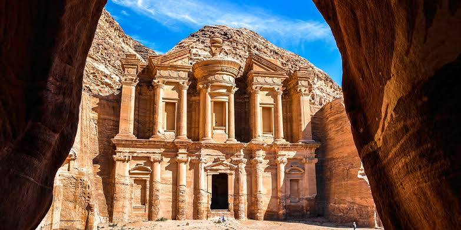

Petra

Descripción
Petra es una antigua ciudad arqueológica famosa por sus construcciones talladas directamente en roca. Fue la capital del reino nabateo y es conocida como "la ciudad rosa" debido al color de la piedra utilizada en sus edificios.
Su construcción demuestra el avanzado conocimiento de los nabateos en arquitectura, ingeniería hidráulica y comercio, convirtiéndola en uno de los sitios históricos más sorprendentes del mundo.
Ubicación
Se encuentra en el sur de Jordania, en un valle rodeado de montañas de piedra arenisca. Su entrada principal es un estrecho desfiladero llamado Siq.
Curiosidades
- Su construcción comenzó aproximadamente en el siglo IV a.C. por los nabateos.
- El edificio más famoso es Al-Khazneh o "El Tesoro", una impresionante fachada tallada en la roca.
- Petra fue un importante centro comercial entre Arabia, Egipto, Siria y el Mediterráneo.
- Fue declarada Patrimonio de la Humanidad por la UNESCO en 1985.
Datos importantes
La ciudad permaneció desconocida para gran parte del mundo occidental hasta 1812, cuando fue redescubierta por el explorador suizo Johann Ludwig Burckhardt. Actualmente es uno de los destinos turísticos más importantes de Jordania.